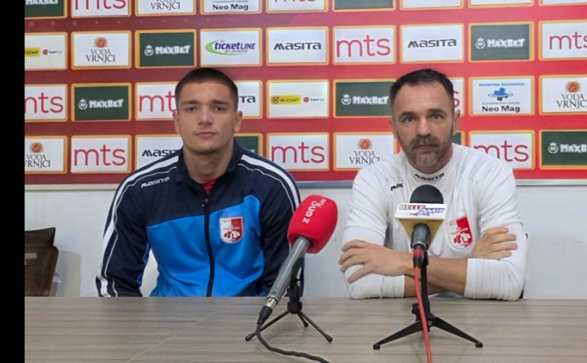

Kup Srbije: Radnički spreman za Dubočicu
Fudbalski klub Radnički gostovaće u šesnaestini finala Kupa Srbije ekipi Dubočice. O tome kakva su očekivanja pred ovaj važan kup duel govorili su šef stručnog štaba i prvotimci niškog tima na konferenciji za medije na stadionu Čair.